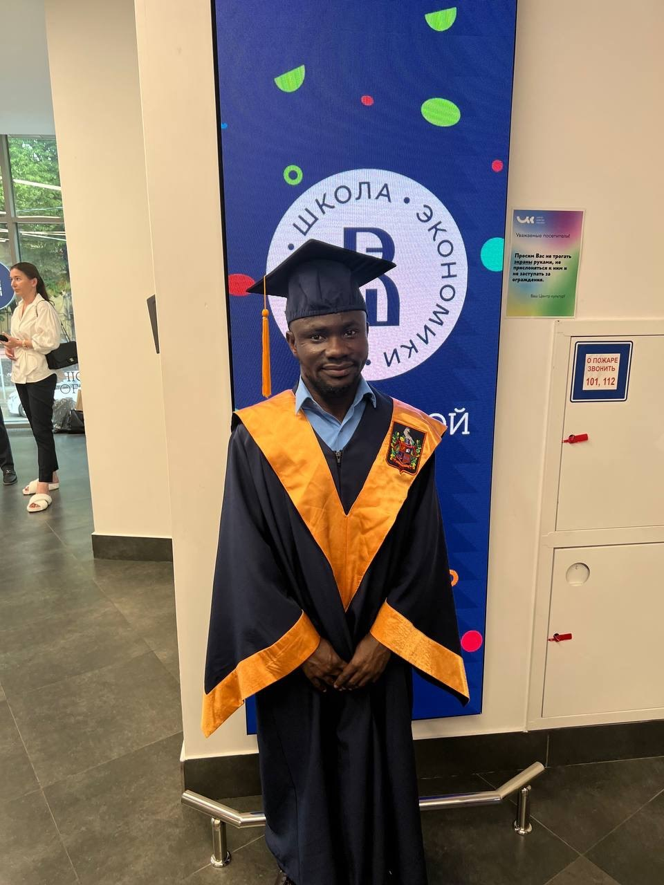
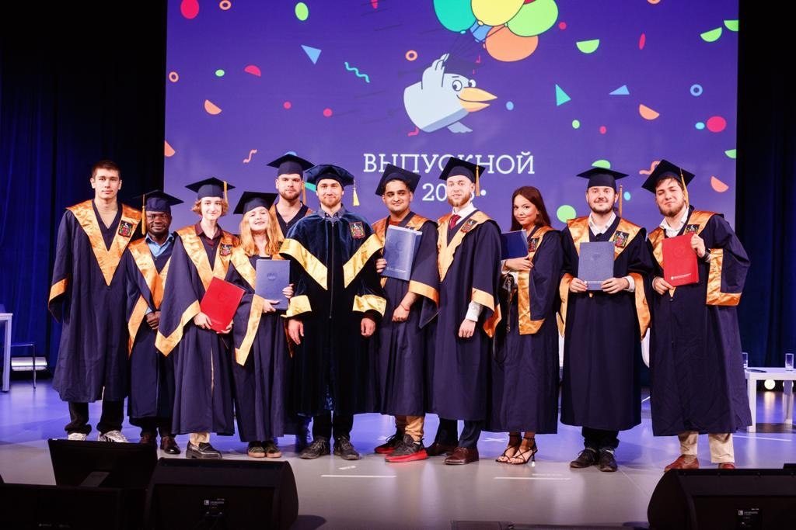

Reconnect. Speak. Thrive.
Your journey home begins here

Before Speak Ghana, I moved to Russia. I didn't speak a word of Russian. Two years later, I walked across a stage in Moscow to receive my Master's degree — in Russian. Here's how I did it, and why it means you can absolutely learn Twi.

When I told people I was moving to Russia for my Master's, most of them asked the same question: "But do you speak Russian?"
The answer was no. I didn't know a single word.
I had studied in English my whole life. My undergraduate degree was in English. I had never learned another language before. And now I was about to move to a country where almost everything — street signs, grocery stores, university lectures — was in a language I couldn't read or understand.
People thought I was crazy. Maybe I was.
But I did it. And today, I still speak and understand Russian.
If I can learn Russian — one of the hardest languages for English speakers — from scratch and complete a Master's degree in it, then you can absolutely learn Twi.
I arrived in Russia with a dictionary and a lot of confidence. That confidence disappeared fast.
The first time I went to a grocery store, I stood in front of the milk section for ten minutes. I couldn't read the labels. I couldn't ask anyone. I didn't know how to say "milk."
I bought yogurt instead. I didn't even like yogurt.
That was my life for months. Simple things — buying food, taking the bus, understanding a professor — felt impossible.
But I kept showing up.
I didn't have a special gift for languages. I wasn't naturally talented. I just found a method that worked and stuck to it.
1. I listened — a lot. I listened to Russian radio, Russian songs, Russian conversations I didn't understand. At first, it was just noise. But slowly, I started picking up words. Then phrases. Then sentences.
2. I spoke badly — and kept speaking. I made mistakes every day. Wrong grammar. Wrong pronunciation. Embarrassing moments. But I kept talking. Every mistake was a step forward.
3. I surrounded myself with the language. I didn't hide in English-speaking groups. I made Russian friends. I watched Russian TV. I forced myself to live in the language.
4. I stopped being afraid of being wrong. This was the hardest. I wanted to be perfect. I wanted to speak like a native. But perfection was stopping me from even trying. Once I accepted that I would make mistakes, everything changed.

After about a year, something shifted. I started understanding my professors without translating in my head. I could take notes in Russian. I could ask questions.
Was it perfect? No. I still made grammar mistakes. My accent was clearly not native. But I was understanding. I was communicating. And that was enough.
My Master's program was in Russian. The lectures, the assignments, the exams — all in Russian. There were days I felt like giving up. Days I thought I wasn't smart enough.
But I kept going. And on graduation day, when they called my name, I walked across that stage not just with a degree — but with proof that language barriers can be broken.
That moment on stage wasn't just about a degree. It was proof that a boy from Ghana who didn't know a word of Russian could learn a completely new language and succeed in it.
If I can do it with Russian, you can do it with Twi.
When I started Speak Ghana, I built it around everything I learned in Russia.
Learning Twi isn't about being perfect. It's about starting. It's about saying your first greeting, even if it comes out wrong. It's about understanding one word in a song your grandmother used to sing. It's about feeling closer to home.
I learned Russian from scratch and earned a Master's degree in it. I know how hard language learning can be. And I know it's possible.
If you're in the diaspora and you've been wanting to learn Twi — stop waiting. Start today. We'll walk with you every step of the way.
You don't need to move to Russia. You don't need to spend years in a classroom. You just need to start.
Come as you are. Whether you only know "Akwaaba" or you can already hold a simple conversation — we'll meet you where you are.
Free March classes — no payment needed. Just come and try it.
Sign Up for Free →